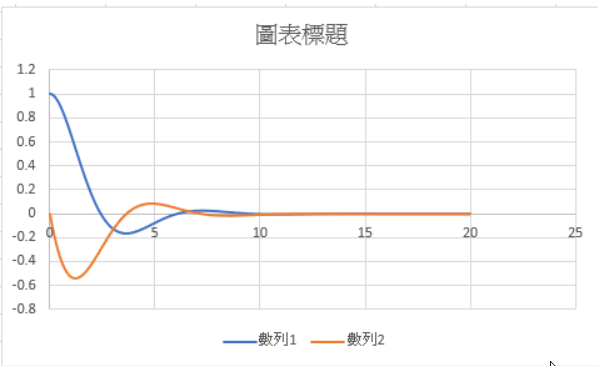

First <<
Previous Next >> usb2
飛鏢
無效main（）{
為（int i = 0; 我<10; 我++）
{
打印（'hi $ {i + i}'）；
}
打印（'hi hi hi'）；
}
https://dartpad.dartlang.org/?id=b579379b9c7838b7b844db519419ad10（dartpad）
https://gist.github.com/40823246/b579379b9c7838b7b844db519419ad10（gits）
-------------------------------------------------- -------------------------------------------------- ---------
無效main（）{
int i = 0;
int sum = 0;
為我; 我<20; 我++）{
和+ = i;
打印（“ $ sum”）；
}
打印（'sum = $ sum'）； }
https://dartpad.dartlang.org/?id=0893e89f8a2531224ba8a277b49e1865（dartpad）
https://gist.github.com/40823246/0893e89f8a2531224ba8a277b49e1865（gits）
-------------------------------------------------- ----------------------- 解常微分方程式
//下列Dart程序，利用Runge Kutta迭代運算法，解常微分方程式
//設t為時間，x則設置物體的位移
//假設要解F = ma的單一質量加上彈簧（常數為k）與黏滯阻尼（常數為b）
// f為沿位移方向的施力
// dx / dt = v，dv / dt =（f-kx-bv）/ m
// dx / dt =（tx）/ 2，起始值t0 = 0，x0 = 1，求t = 2時的x值
//
//已知起始值t0與x0後，可以利用以下rungeKutta函式，以
// h為每步階增量值，求dxdt常微分方程式任一t的對應值x
//定義函式rungeKutta，共有四個輸入變數
//物體質量
const num m = 1;
//對質量的施力f
const num f = 0.0;
//彈簧係數
const num k = 1;
//阻尼係數
const num b = 1;
//呼叫運算時，需要開始時間，終點時間，位移起始值與速度起始值，增量h
rungeKutta（t0，x0，v0，t，h）{
//利用步階增量值h與t的啟動及終點值
//計算需要迭代的次數
int n =（（t-t0）/ h）.toInt（）；
//宣告x為雙浮點數，並創建初始值x0
雙x = x0;
//宣告v為雙浮點數，並創建初始值v0
雙v = v0;
//模擬運算前
//只列到小數點第三位，時間，位移與速度以\ t替代，\ t代表插入tab符號，可將資料複製到Excel進行繪圖
打印（“ $ {t0.toStringAsFixed（3）} \ t $ {x.toStringAsFixed（3）} \ t $ {v.toStringAsFixed（3）}”）；
//利用已知的t0，x0，t終點值與步階增量值h，迭代求x對應值
//索引值i將每次遞增1，從i = 1執行以表示環圈至i = n
為（int i = 1; i <= n; 我++）{
//初始階段的t與x值代入dxdt與dvdt函式求某四個四個浮點變數值
//因為必須兩個函式取代，必須同時計算
double xk1 = h * dxdt（t0，x，v）；
雙vk1 = h * dvdt（t0，x，v）；
double xk2 = h * dxdt（t0 + 0.5 * h，x + 0.5 * xk1，v + 0.5 * vk1）；
double vk2 = h * dvdt（t0 + 0.5 * h，x + 0.5 * xk1，v + 0.5 * vk1）；
double xk3 = h * dxdt（t0 + 0.5 * h，x + 0.5 * xk2，v + 0.5 * vk2）；
double vk3 = h * dvdt（t0 + 0.5 * h，x + 0.5 * xk2，v + 0.5 * vk2）；
double xk4 = h * dxdt（t0 + h，x + xk3，v + vk3）；
雙vk4 = h * dvdt（t0 + h，x + xk3，v + vk3）；
//利用上述四個變數值求此步階增量後的對應x值
x = x +（1.0 / 6.0）*（xk1 + 2 * xk2 + 2 * xk3 + xk4）；
v = v +（1.0 / 6.0）*（vk1 + 2 * vk2 + 2 * vk3 + vk4）；
//每次用於迴圈執行最後，準備計算下一個步階增量後的x對應值
// t初始值配合步階增量值h，進行增量
t0 = t0 + h;
//列出各模擬運算時間點所得到的結果
//只列到小數點第三位，時間，位移與速度以\ t替代，\ t代表插入tab符號，可將資料複製到Excel進行繪圖
打印（“ $ {t0.toStringAsFixed（3）} \ t $ {x.toStringAsFixed（3）} \ t $ {v.toStringAsFixed（3）}”）；
}
//完成迴圈迭代後，傳回與t終點值對應的x值
返回[x，v];
}
//將微分方程式“ dx / dt = v”定義為dxdt函式
dxdt（t，x，v）{
返回v;
}
// dx / dt = v，dv / dt =（f-kx-bv）/ m
dvdt（t，x，v）{
返回（fk * xb * v）/ m;
}
//定義main（）主函式內容，目的在利用rungeKutta函式
//解常微分方程式
主要（）{
//驅動程序方法
// num資料型別可以是整體或雙浮點數
num t0 = 0;
num x0 = 1;
num v0 = 0;
num t = 5;
雙向h = 0.1;
rungeKutta（t0，x0，v0，t，h）；
}
https://dartpad.dartlang.org/?id=46568a6b0abd2150e42d7c609ad05fba
https://gist.github.com/40823246/46568a6b0abd2150e42d7c609ad05fba
微分方程模擬結果

USB
First <<
Previous Next >> usb2